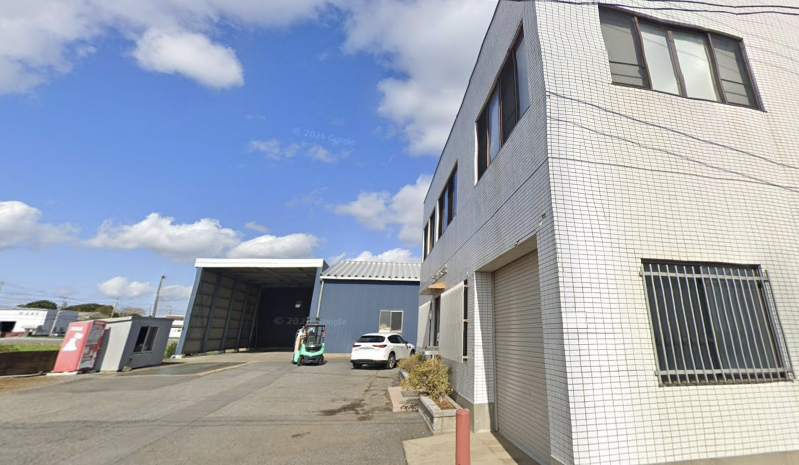
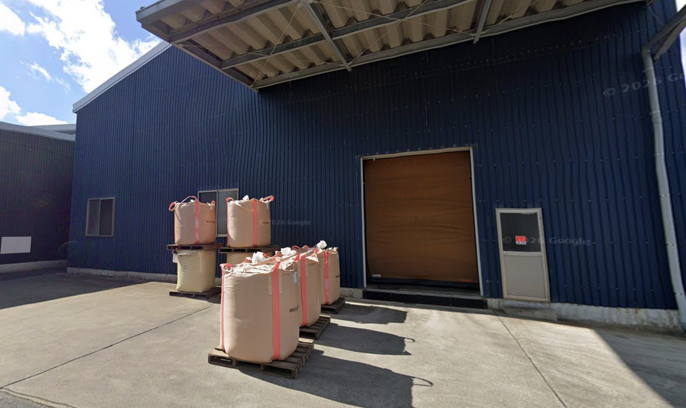
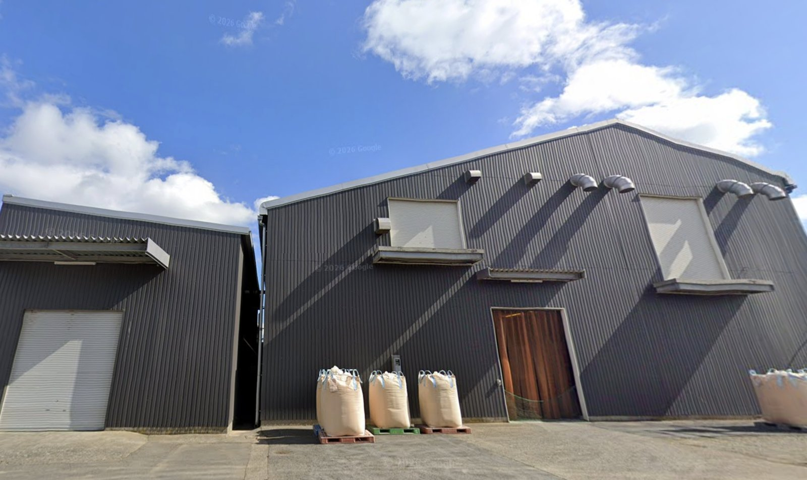

事務スタッフの仕事
JOB経理事務・人事事務などを、3〜4名で分担して担当します。
- 経理事務（仕訳入力、小口管理など）
- 給与計算（給与ソフトを使用）
- 入退社の手続き（社会保険関係など）
- 電話・来客の応対
- 事務所内の簡単な清掃、庶務での外出（社用車）
- 繁忙期の仕入れ業務の補佐（少し）
主食用から加工用までお米を製造・販売。販売先は大手の米菓・味噌・酒造メーカーなど、全国に広がっています。
事務スタッフの時間外労働は月平均2時間ほど。転勤もなく、暮らしのリズムを保って働けます。
賞与年2回、昇給、退職金制度（勤続1年以上）。定年60歳、65歳までの再雇用制度があります。
経理事務・人事事務などを、3〜4名で分担して担当します。
※ここはサンプルです。実際には御社スタッフの1日の流れに差し替えます
簡単な清掃とメール・FAXの確認。
伝票を会計ソフトへ入力します。
取引先からの連絡に対応します。
60分の休憩です。
時期に応じて給与や社会保険の業務。
社用車で銀行・郵便局へ。
小口現金の確認と翌日の準備。
おつかれさまでした。
※ここはサンプルです。実際に働く先輩からのメッセージ・写真に差し替えます
K.Sさん事務／入社◯年目
少人数だからこそ、困ったときにすぐ相談できます。落ち着いて仕事に向き合える職場です。
M.Tさん事務／入社◯年目
17時に終わるので、夕方からの時間を大切にできています。
Y.Hさん工場／入社◯年目
フォークリフトの資格は会社の支援で取りました。未経験でも順番に覚えられます。
T.Nさん工場／入社◯年目
扱ったお米が全国の食卓につながっている。それが誇りです。
主食用から加工用まで、米穀の製造・販売を行っています。昭和24年の創業以来、仕入れ・販売先は全国に広がりました。現在は、食の安全・安心に取り組んでいます。従業員は14名です。



※ここはサンプルです。実際には御社の「よくある質問」が入ります
※ここはサンプルです。実際の担当者の写真・メッセージに差し替えます（不要な場合は削除できます）
募集中事務スタッフ（一般事務・経理事務）
| 雇用形態 | 正社員（雇用期間の定めなし）／試用期間1ヶ月（同条件） |
|---|---|
| 仕事内容 | 経理事務、給与計算、入退社手続き、電話・来客応対、庶務など。3〜4名で分担します。 |
| 給与 | 月給 218,000円〜238,000円 ※経験・能力による |
| 昇給・賞与 | 昇給あり（前年度実績 月5,000〜10,000円）／賞与 年2回（前年度実績 計2.2ヶ月分） |
| 勤務時間 | 8:00〜17:00（休憩60分）／時間外 月平均2時間 ※1年単位の変形労働時間制 |
| 休日・休暇 | 日曜・祝日、会社カレンダーによる（年間休日104日）※土曜休みも応相談／有給休暇（6ヶ月経過後10日） |
| 勤務地 | 〒288-0821 千葉県銚子市小浜町2233（転勤なし） 千葉交通「小浜新田」バス停 徒歩4分／マイカー通勤可（駐車場あり） |
| 応募資格 | 高卒以上、59歳以下（定年60歳のため）／普通自動車免許（AT限定可）／基本的なPC操作（Excel・Word） ＜あれば尚可＞経理事務の実務経験、簿記3級程度の知識、給与計算の経験、会計・給与ソフトの使用経験 |
| 待遇 | 社会保険完備、通勤手当（実費・月額上限15,000円）、退職金制度（勤続1年以上）、再雇用制度（上限65歳）、屋内禁煙 |
| 応募方法 | お電話のうえ、面接時に履歴書（写真貼付）をお持ちください。TEL 0479-23-8181（担当：髙橋） |
同時募集工場作業員
| 仕事内容 | 米の加工・製造作業全般、フォークリフトでの出荷・荷受作業、米のサンプル分析など。経験不問。フォークリフト資格の取得費用は会社が全額支援します。 |
|---|---|
| 給与 | 月給 220,000円〜270,000円／昇給あり（前年度実績 月5,000円〜）／賞与 年2回（前年度実績 400,000円〜） |
| 休日 | 年間休日104日 |
| 応募資格 | 高卒以上、44歳以下（長期勤続によるキャリア形成のため）、普通自動車免許 |
| 詳細 | 勤務時間などはお電話でお問い合わせください。TEL 0479-23-8181 |